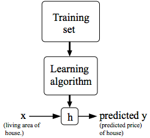
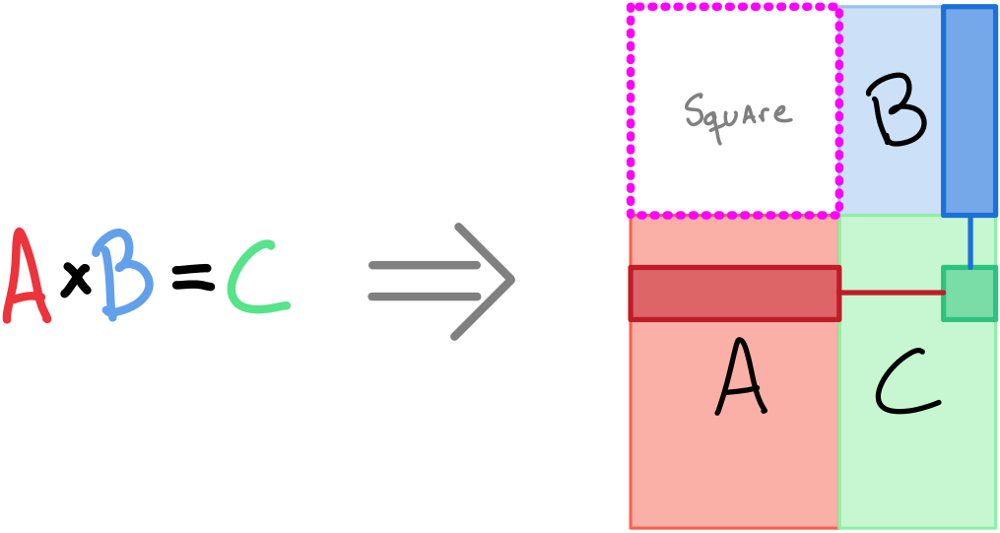
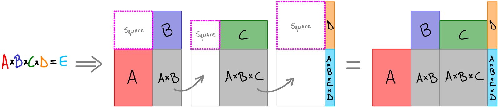

Machine Learning – Week 1
Table of Contents
1. Introduction
- Supervised: you give the right answer to the machine, so it can learn from it.
- Regression: reconstruct a continuous function.
- Classification: given a set of labels, apply one (or more?) labels to each input.
- Unsupervised: the machine is asked to find structure within the given data.
1.1. TODO Questions
[X]classification seems to be a discretization of regression.- ANS Not quite. It seems that there is no ordering relation between the labels.
[-]Is there unsupervised learning that is not “searching for labels”.- ANS It looks like
2. Model and Cost Function
2.1. Vocabulary (on a supervised learning setup):
- Dataset: set of data points.
- Training set: dataset used to train the network.
- i-th Data Point: the pair \(x^{(i)},y^{(i)}\). When we are in a learning scenario, this is a training example
- Features of the \(i^{\text{th}}\) data point: \(x^{(i)}\), input variable or array of input variables.
- Target of the \(i^{\text{th}}\) data point: \(y^{(i)}\), output variable.
- Hypothesis: function (conventionally denoted by \(h\)) that the ML algorithm proposes to be the correct mapping from features to target.
- \(X\): space of input variables.
- \(Y\): space of output variables.
2.2. Model representation
The function \(h\) has the following shape:
\begin{equation} \begin{split} h_{\Theta}(x) &= \Theta_0 + \Theta_1x_1 + \Theta_2x_2 \cdots \Theta_{n-1}x_{n-1}\\ &= [\Theta] \cdot [1|x] \end{split} \end{equation}Where \(x_j\) is the j-th feature of a given data point. The idea is that for a new, unseen \(x'\), \(h_{\Theta}(x') \approx f(x')\) where \(f\) is the actual underlying function producing the dataset.

2.3. Cost/Objective Function
- By convension denoted by \(J\).
- Its parameters are \(\Theta_i\).
- By minimizing \(J\), we are finding parameters \(\Theta_i\) such that \(h_{\Theta}(x^{(i)})\) is close to \(y^{(i)}\). \[J(\Theta_0,\Theta_1,\cdots) = \frac{1}{2m}\Sigma^{m}_{i=1}\big(h_{\Theta}(x^{(i)})-y^{(i)}\big)^2\] Where \(m\) is the number of training examples in the training set.
- Called Squared error function or error function or mean square error: pretty common for regression problems.
- Do not confuse \(h_\Theta(x)\) (the predictor), with \(J(\Theta)\) (the “how good the predictor is”)
2.3.1. DONE Questions
[X]I get the \(\frac{1}{m}\) part of the cost function: we want an average squared-difference but why are we didiving by \(2\)? Wouldn’t it make more sense to compute the square root?- ANS The mean is halved \((\frac{1}{2})\) as a convenience for the computation of the gradient descent, as the derivative term of the square function will cancel out the \((\frac{1}{2})\) term.
3. Parameter Learning
3.1. Gradient Descent
- The way to update each parameter is this \[\Theta_j \leftarrow \Theta_j - \alpha\frac{\delta}{\delta\Theta_j}J(\Theta_0,\Theta_1,\cdots)\] Where \(\alpha\) is the learning rate. and the expression at the right of \(\alpha\) is the partial derivative of \(J\) with respect to \(\Theta_j\).
- Perform a simultaneous update of all the \(Theta_j\) using the same \(J()\) function in each iteration.
- The smaller \(\alpha\) is, the slower the convergence (smaller steps towards the minimum of \(J\)). The greater \(\alpha\) is, the faster we approach to it. Note that too big may overshoot.
- It is still possible to learn with a fixed \(\alpha\). As \(J\) approaches to its minimum, its derivative approaches to zero. This means that each update to \(\Theta\) gets smaller and smaller. This is good, coz as we get closer to the minimum, we want to be more cautious with the steps, so we don’t overshoot.
4. Linear Algebra Review
- Matrix: rows \(\times\) cols. Usually in uppercase.
- Vector: a single column. Usually in lowercase.
4.1. Matrix-Vector and Matrix-Matrix Multiplitation
- I find it easier to see the multiplication operation through the following layout, where whe two inner sizes (A.width and B.height) are matched in the top left square (magenta), and the result of the multiplication naturally falls in the lower right of the arrange.
To compute a given element \(C_{ij}\), one must dot-product the row \(i\) of the first matrix, and the column \(j\) of the second matrix, which again, looks very natural.

- For consecutive multiplications, the diagram can be easily extended by placing the new matrix at the right of the second operand.
The only thing to take care of, is to match the width of the intermediate result with the height of the new operand. For example, the width of \(A \times B\), with \(C\).

- Not commutative \(A\times B \neq B\times A\).
- Associative \((A \times B) \times C = A \times (B \times C)\).
4.2. Identity
- \(I \times A = A\times I = A\)
- Note that in general those two are \(I\) with different dimensions.
- \(I\)’s dimension is normally implicit. But sometimes it is denoted as \(I_{n\times n}\) or \(I_{n}\).
4.3. Inverse and Transpose
4.3.1. Inverse
If \(A\) is a square matrix of size \(m \times m\), and it has an inverse, then \[A \times A^{-1} = A^{-1} \times A = I\]
A = [3 4; 2 16] % Ainv_numeric = pinv(A) A * Ainv_numeric % If you pay attention, the product generates tiny rounding errors. % Ainv_exact = [0.4 -0.1; -0.05 0.075] A * Ainv_exact % This is the precise answer.
A = 3 4 2 16 Ainv_numeric = 0.400000 -0.100000 -0.050000 0.075000 ans = 1.0000e+00 1.1102e-16 -2.2204e-16 1.0000e+00 Ainv_exact = 0.400000 -0.100000 -0.050000 0.075000 ans = 1.0000 -0.0000 0 1.0000- A matrix without inverse is said to be Singular or Degenerate
4.3.2. Transpose
- The transpose of a matrix \(A\) is denoted by \(A^{T}\).
In octave, it is experssed with a single quotation mark
'A = [1 2 3 4; 5 6 7 8] At = A'
A = 1 2 3 4 5 6 7 8 At = 1 5 2 6 3 7 4 8